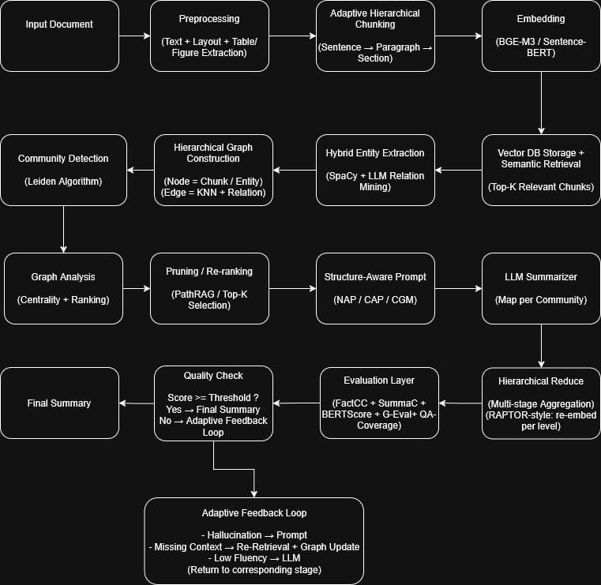

Cheat sheet · Mission · Resources
Memahami Flow Project GraphRAG Summarizer
Materi ini menjelaskan flow di gambar: bagaimana aplikasi mengambil PDF, mencari bagian relevan, membangun graph, membuat ringkasan, mengevaluasi hasilnya, lalu memutuskan apakah hasilnya diterima atau perlu diperbaiki.
Gambaran paling sederhana
Bayangkan aplikasi ini seperti pabrik ringkasan:
- PDF masuk sebagai bahan mentah.
- PDF dipotong-potong menjadi chunk kecil.
- Chunk dicari dan dipetakan memakai vector database dan graph.
- LLM merangkum bagian penting per kelompok.
- Ringkasan digabung dan dinilai; kalau belum bagus, sistem bisa retry tahap yang relevan.

Dua mode penting di aplikasi
1. Ingest Run
Tujuan: memasukkan PDF ke database.
Flow: PDF → Docling → chunks → embedding → Qdrant.
Output: collection Qdrant yang berisi vector dan payload chunk.
2. Full-Pipeline Run
Tujuan: menjawab query / membuat ringkasan dari collection.
Flow: query → retrieval → graph → pruning → summarize → reduce → evaluate → feedback.
Output: final summary dan artifact evaluasi di folder output/.
Tahap demi tahap
Input Document
Apa yang dilakukan: user memilih PDF yang ingin diproses.
Input: file PDF, misalnya buku atau laporan.
Output: path PDF yang akan dipakai oleh tahap preprocessing.
Analogi: ini seperti menyerahkan buku ke mesin fotokopi pintar.
Preprocessing: text, layout, table, figure extraction
Apa yang dilakukan: Docling membaca isi PDF, mengambil teks, layout, dan metadata seperti halaman atau posisi.
Input: PDF mentah.
Output: potongan teks awal beserta metadata. Di branch sekarang, table/figure belum menjadi evidence utama, tapi fondasi text/layout sudah ada.
Kenapa penting: LLM tidak langsung membaca PDF mentah; sistem perlu mengubah PDF menjadi data yang bisa dicari.
Adaptive Hierarchical Chunking
Apa yang dilakukan: dokumen dipecah menjadi chunk pada level seperti sentence, paragraph, atau section.
Input: teks hasil preprocessing.
Output: daftar chunk dengan level/hierarchy metadata.
Kenapa penting: chunk yang terlalu besar sulit dicari; chunk yang terlalu kecil kehilangan konteks. Hierarchy membantu menjaga konteks.
Embedding
Apa yang dilakukan: setiap chunk diubah menjadi vector angka yang mewakili makna teks.
Input: teks chunk.
Output: vector embedding. Project ini memakai jalur Nomic yang kompatibel dengan SentenceTransformer.
Analogi: embedding seperti memberi koordinat pada kalimat, sehingga kalimat yang mirip makna akan berdekatan.
Vector DB Storage + Semantic Retrieval
Apa yang dilakukan: vector dan metadata chunk disimpan di Qdrant. Saat user bertanya, query juga diubah menjadi vector lalu dicari chunk yang paling mirip.
Input: vector chunk saat ingest, atau vector query saat full-pipeline.
Output: top-k chunk paling relevan.
Catatan branch ini: upload besar sudah dibatch agar tidak gagal karena limit payload Qdrant Cloud.
Hybrid Entity Extraction
Apa yang dilakukan: sistem mencari entity penting seperti nama orang, tempat, organisasi, konsep, dan relasi antar entity.
Input: retrieved chunks.
Output: daftar entity dan relasi.
Kenapa hybrid: spaCy bisa mengambil entity dasar; LLM relation mining bisa menambah relasi jika provider/API tersedia.
Hierarchical Graph Construction
Apa yang dilakukan: chunks dan entity dijadikan node graph. Hubungan antar node dijadikan edge.
Input: chunks, embeddings, entities, relations.
Output: graph yang berisi node chunk/entity dan edge similarity/mentions/relation.
Analogi: ini seperti membuat peta konsep dari potongan dokumen.
Community Detection
Apa yang dilakukan: graph dibagi menjadi kelompok node yang saling dekat.
Input: graph.
Output: communities, yaitu kelompok tema/topik.
Kenapa penting: daripada merangkum semua sekaligus, sistem merangkum per kelompok agar lebih rapi.
Graph Analysis
Apa yang dilakukan: sistem menghitung node mana yang penting memakai ranking/centrality.
Input: graph dan communities.
Output: ranked graph nodes, graph summary, dan score pentingnya node.
Kenapa penting: tidak semua chunk sama penting; graph membantu memilih bukti yang paling kuat.
Pruning / Re-ranking
Apa yang dilakukan: dari banyak chunk, sistem memilih sedikit chunk terbaik untuk dijadikan konteks ringkasan.
Input: ranked graph nodes, retrieved chunks, dan graph.
Output: pruned summary context per community.
Branch sekarang: sudah path-aware dan menyimpan path evidence, tapi belum full paper-grade PathRAG.
Structure-Aware Prompt: NAP / CAP / CGM
Apa yang dilakukan: selected context diubah menjadi prompt yang memberi instruksi jelas ke LLM.
Input: pruned context per community.
Output: prompt per community.
- NAP: node-aware prompt, LLM melihat chunk sebagai node dengan ranking dan evidence.
- CAP: community-aware prompt, LLM fokus pada satu community.
- CGM: community-to-global merge, output community disiapkan agar mudah digabung.
LLM Summarizer: Map per Community
Apa yang dilakukan: LLM membuat ringkasan kecil untuk tiap community.
Input: prompt per community.
Output: community map summaries.
Analogi: ini seperti meminta beberapa asisten meringkas bab berbeda dari buku yang sama.
Hierarchical Reduce
Apa yang dilakukan: ringkasan per community digabung menjadi ringkasan final. Jika community banyak, penggabungan dilakukan bertingkat.
Input: community summaries.
Output: final summary.
Branch sekarang: sudah RAPTOR-style multi-level, tapi grouping masih fixed batch, belum embedding-clustered.
Evaluation Layer
Apa yang dilakukan: sistem menilai kualitas ringkasan.
Input: final summary, source chunks, query.
Output: evaluation result berisi metrics.
Saat ini: G-Eval dan QA coverage bisa tersedia; FactCC/SummaC masih status unavailable sampai adapter optional dibuat. Follow-up lightweight metrics ada di issue #43.
Quality Check
Apa yang dilakukan: metric evaluation dibandingkan dengan threshold.
Input: evaluation result.
Output: status PASS, WARN, atau FAIL, plus suggested action.
Contoh: kalau groundedness rendah, sistem bisa menyarankan retry retrieval atau prompt.
Adaptive Feedback Loop
Apa yang dilakukan: jika quality check gagal, sistem menentukan tahap mana yang harus diulang.
Input: quality result dan suggested action.
Output: keputusan stop atau retry ke retrieval, prompt, atau reduce.
Contoh mapping: missing context → retrieval; hallucination → prompt; low fluency → LLM/reduce.
Final Summary
Apa yang dilakukan: jika quality gate diterima, ringkasan final menjadi output utama.
Input: final summary dari reducer dan keputusan quality gate.
Output: artifact final seperti final_summary.txt dan final_summary.json.
Status branch sekarang
| Bagian | Status | Arti sederhananya |
|---|---|---|
| Flow end-to-end | Good | PDF → retrieval → graph → summary → evaluation sudah jalan. |
| After graph analysis | Much better | Sudah ada path-aware pruning, NAP/CAP/CGM, reduce bertingkat, metrics, feedback. |
| Research-grade details | Partial | PathRAG, RAPTOR clustering, FactCC/SummaC, table/figure masih follow-up. |
| Evaluation latest | PASS with warnings | Output layak jadi baseline, warning-nya sudah dijadikan issue lanjutan. |
Artifact yang sebaiknya dicek saat debugging
graph_summary.json: jumlah community dan modularity.graph_ranked_nodes.json: node mana yang dianggap penting.pruned_summary_context.json: chunk mana yang dipilih sebagai bukti.community_map_summaries.json: ringkasan per community.final_summary.json: hasil akhir reduce.evaluation_result.json: semua metric evaluasi.quality_gate_report.json: keputusan PASS/WARN/FAIL.feedback_loop_decision.json: apakah sistem stop atau retry.
Latihan cepat
1. Kalau ringkasan terasa hallucinated, tahap mana yang paling mungkin diperbaiki?
Jawaban: prompt/map summarization dulu. Kalau masalahnya karena bukti kurang, baru retrieval/pruning.
2. Kenapa aplikasi tidak langsung memberi seluruh PDF ke LLM?
Jawaban: PDF panjang mahal dan sulit dikontrol. Chunking + retrieval membuat LLM hanya membaca bagian yang relevan.
3. Apa bedanya community summary dan final summary?
Jawaban: community summary adalah ringkasan per kelompok/topik. Final summary adalah gabungan semua community summary.
4. File apa yang paling cepat dicek untuk tahu bukti apa yang dipakai?
Jawaban: pruned_summary_context.json.
Sumber utama
- Flowchart image
- Flow Project next-development handoff
- Runtime stage order in launcher/runners.py
- Cheat sheet reference
{kind=link}